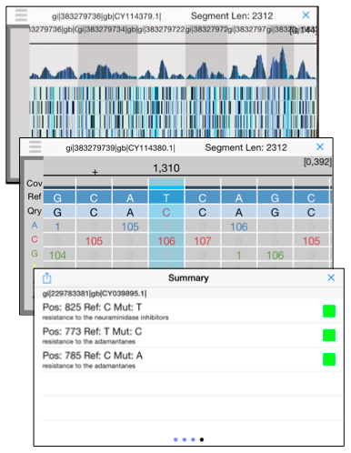

<table class="intro">
<tr> <td width="500" valign="top">

<span class="contentheadbig">iGenomics</span><br>
<a href="http://schatzlab.cshl.edu/people/apalatnick/">Aspyn Palatnick</a>, 
<a href="http://biology.as.nyu.edu/object/ElodieGhedin.html">Elodie Ghedin</a> &amp;
<a href="http://schatzlab.cshl.edu">Michael Schatz</a> <br>
    
<hr>

iGenomics is a scientific application for studying and analyzing DNA sequences. It allows you to map DNA sequencing reads from a sample to a reference genome to determine mutations, such as matching the DNA sequencing reads from a virus or microbe to a known reference. After aligning the reads, iGenomics displays the results in an interactive view, showing how each read aligns along with a coverage profile that highlights any detected mutations. It also can load and display lists of known mutations to quickly screen samples for their most important positions. iGenomics follows the state-of-the-art algorithms for alignment and genotyping, and has been validated with Illumina, Ion Torrent, PacBio, and Oxford Nanopore sequencing data with standard pipelines including Bowtie, BWA, and SAMtools. 

<br><br>

After downloading, please follow the <a href="tutorial/">tutorial</a> for more infomation.

<br><br><br>

<span class="contenthead">Links</span><hr>

<table class="intro" width=100%>

  <tr> <td valign=top width=10>&raquo;</td> <td valign=top><a href="tutorial/">Tutorial</a></td></tr>
  <tr> <td valign=top width=10>&raquo;</td> <td valign=top><a href="analysis/">Analysis</a></td> </tr>
  <tr> <td valign=top width=10>&raquo;</td> <td valign=top><a href="publications.shtml">Publications</a></td> </tr>
</tr> <tr><td height=8 colspan=2></td></tr>

</table>

<br><br>

<span class="contenthead">Recent News</span><hr>

<table class="intro" width=100%>

<tr>
  <td valign=top width=10>&raquo;</td>
  <td valign=top><a href="https://t.co/U3iqNnndY5">iGenomics is now available in the App Store</a> <br> March 19, 2015</td>
</tr> <tr><td height=8 colspan=2></td></tr>

<tr>
  <td valign=top width=10>&raquo;</td>
  <td valign=top><a href="">First beta release in the Apple App Store</a> <br> Jan 26, 2015</td>
</tr> <tr><td height=8 colspan=2></td></tr>

</table>


</td>

<td width="274" valign="top" align=center>
<br>

 

<br><br>

<table class="intro"> <tr> <td align="left">
<b>iGenomics</b><br>
Mobile DNA Sequence Analysis<br>
E-mail: mschatz &lt;at&gt; cshl.edu <br>
Twitter: <a href="http://twitter.com/mike_schatz">@mike_schatz</a> <br>
</td> </tr> </table>

</td>
</tr>
</table>

